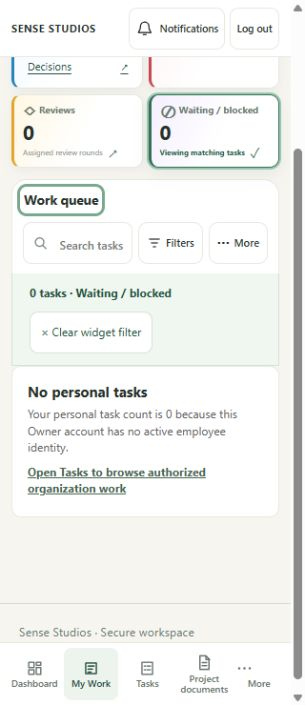
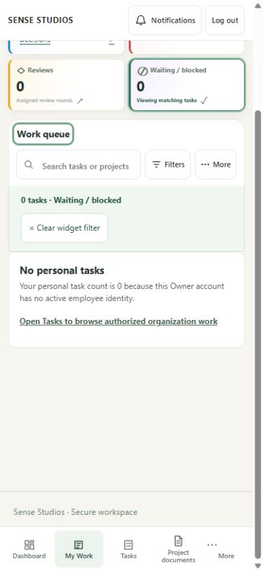
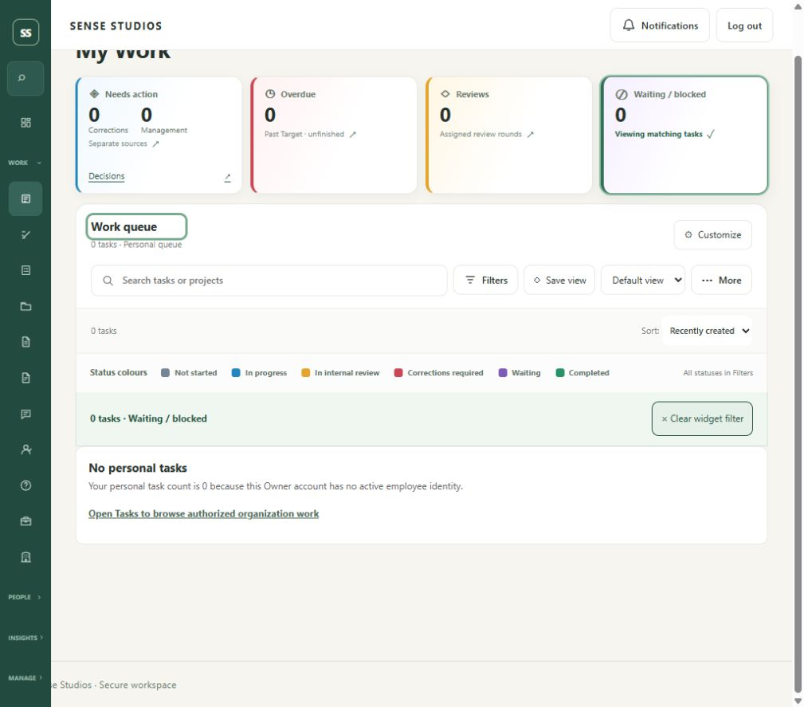
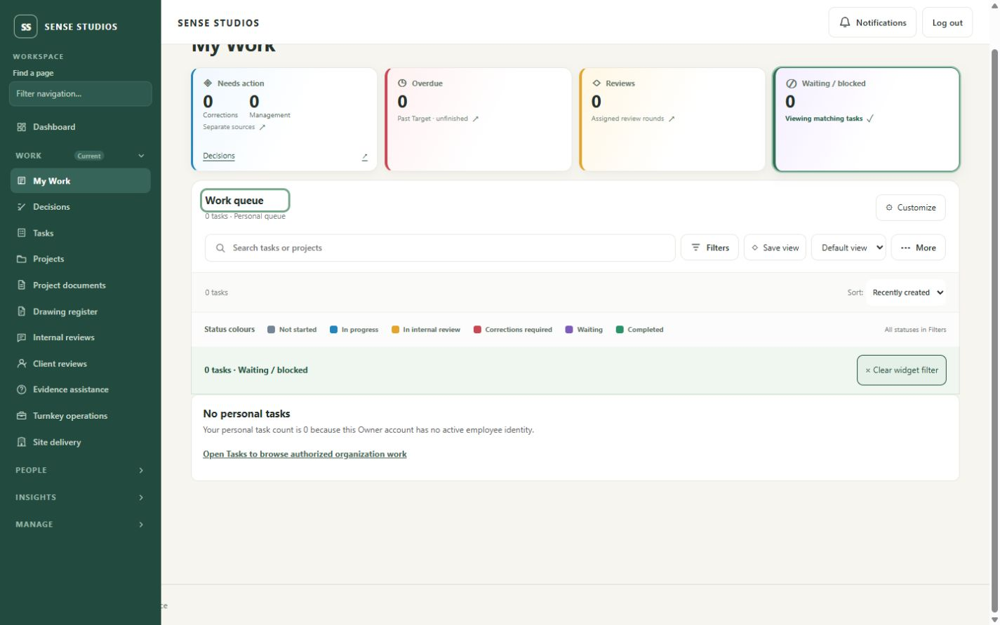
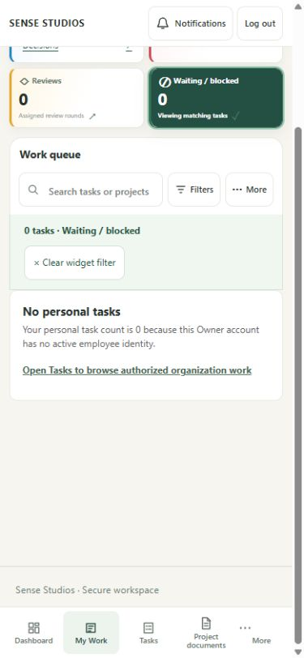

My Work card selection
Actual existing Owner session, current source. Zero personal tasks is truthful. These settled captures show card interaction; populated staff acceptance remains pending. The in-app capture surface returns cropped bitmaps; configured CSS viewport and actual image dimensions are listed separately. These are not final pixel-exact viewport acceptance captures.
Evidence and limitations · Settled geometry · Earlier geometry · Toggle / replace / Clear · 130 passing frontend tests and gates
320×740 CSS viewport — Waiting selected305×705 bitmap. Queue focused; Clear above fixed navigation in measured geometry.
390×844 CSS viewport — Waiting selected375×812 bitmap. Light selected tile; no document overflow.
1024×900 CSS viewport — Waiting selected1009×887 bitmap.
1440×900 CSS viewport — Waiting selected1425×891 bitmap.
Before selected palette correctionLegacy selected CSS incorrectly filled the tile dark green.
Earlier immediate captures are retained separately: 320, 390, 1024, 1440, Overdue. Their painted frame is not used as settled selection proof.